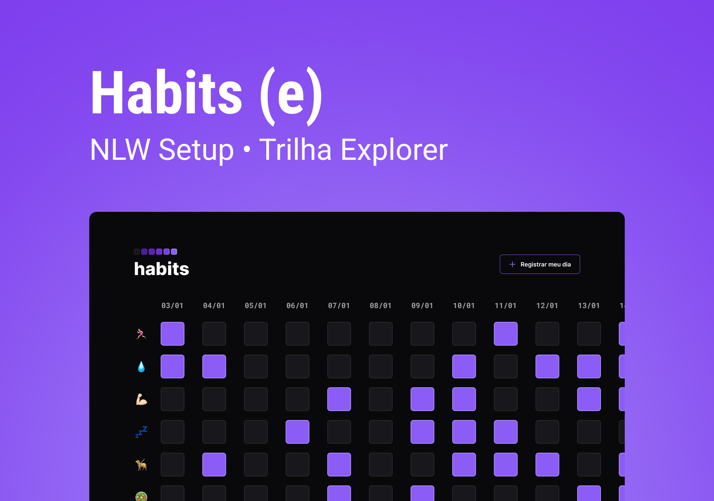

January 16th to 20th, 2023
NLW Setup. An Unforgettable Event

The image shows a screenshot of the 'Habits' app, an app designed to
track and track daily habits. The interface is modern and uncluttered,
displaying a list of habits with corresponding icons and progress
bars. The app offers customizable features, as individual goals and
reminders. It's a visual representation of the importance of creating
healthy routines and how 'Habits' can help in this process.